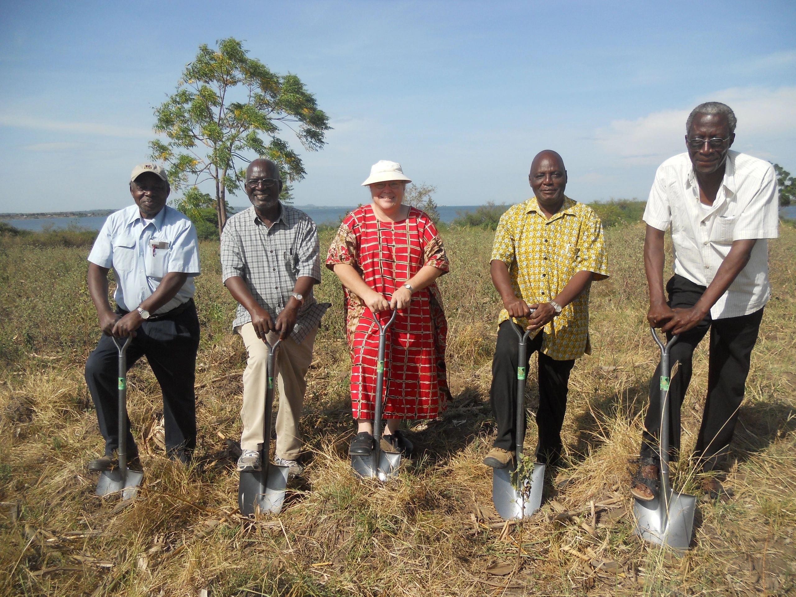
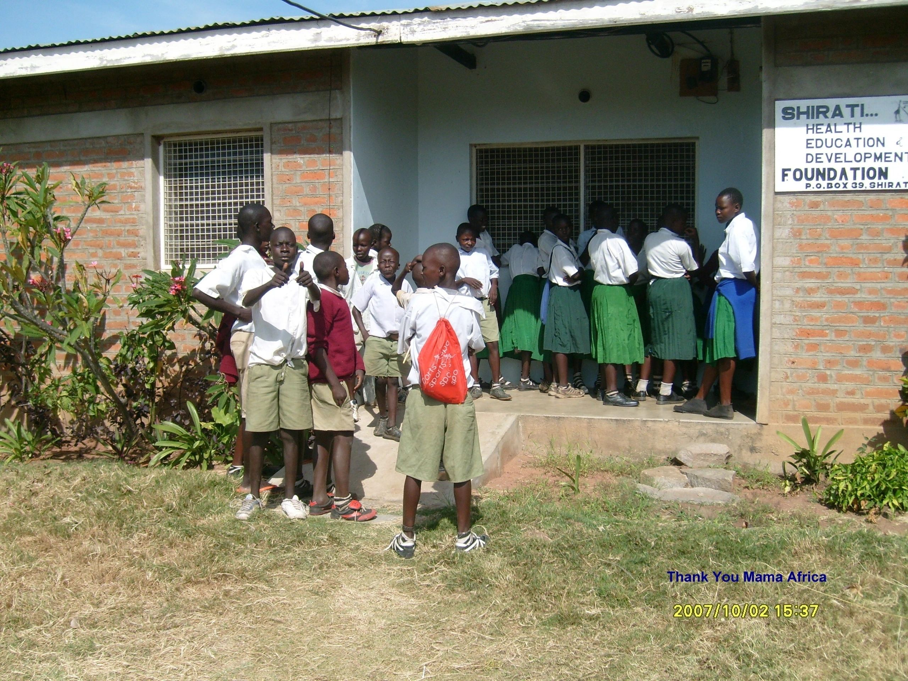

Health
SHED Foundation works in partnership with Village Life Outreach Project and Roche Health Center to improve access to quality health care in rural northern Tanzania.
Learn about Health →
SHED Foundation is a Tanzanian nonprofit organization founded in 2006 to improve health, education, and community development in underserved communities in northern Tanzania.
SHED Foundation works in partnership with Village Life Outreach Project and Roche Health Center to improve access to quality health care in rural northern Tanzania.
Learn about Health →SHED works with Village Life Outreach Project to support education and opportunities for children and communities in rural northern Tanzania.
Learn about Education →SHED partners with Village Life Outreach Project and local communities to support sustainable development, with a focus on clean water, health, education, and nutrition.
Learn about Development →SHED was registered in January 2006 and granted NGO status in March 2006, with a mandate to work in health, education, and development in northern Tanzania.

Together with Village Life Outreach Project and local communities, SHED Foundation supports health, education, and sustainable community development for the people of the Shirati region.
SHED Foundation began in Shirati, Rorya District, with a mandate to work in health, education, and development in northern Tanzania. Many of the programs described on earlier pages of this site are part of SHED's history, not its current activities.
Head office and community roots remain in a rural village near Lake Victoria and the Kenya-Tanzania border.
One of SHED's most important and enduring partnerships has been with Village Life Outreach Project, which has worked with SHED in Tanzania since the early years of the Foundation.
SHED Foundation works in close partnership with Village Life Outreach Project and the communities of Shirati.
Visit Village Life Outreach Project